Reproducibility
Nick Markov 1/25/2021
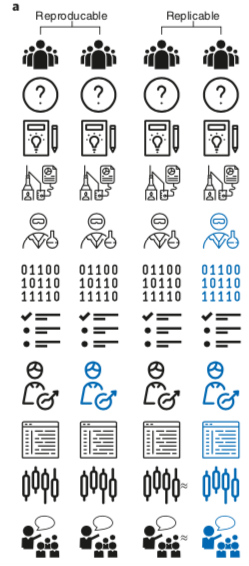
Figure 1, Patil et al., 2019
Replicability & Reproducibility
— Replicate: perform a new study to confirm or disprove original study
— Reproduce: re-do analysis of data from original study to confirm results
— Computational reproducibility: re-run study code on study data to get results
The Spectrum of Reproducibility
Reproducibility
Usability
Why should do we do it?
- Journals
- Community
Ourselves
Investing in reproducibility is close to:
- record keeping
- software engineering
- data management
- project management
- automation
- …
Have a folder for each project
project-1/
code/
01nasal-epithelium/
data/
01nasal-epithelium/
raw/
201211_A00749_0168_AHWY37DRXX/
project-2/
code/
results/
data/
project-3/
201105_bulk_analysis_batch1/
201111_bulk_analysis_batch2/
201121_bulk_analysis_all/
Have a folder for each project
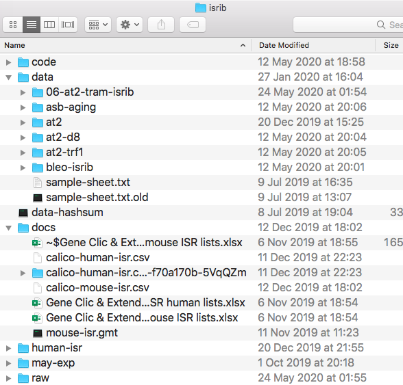
Have a folder for each project
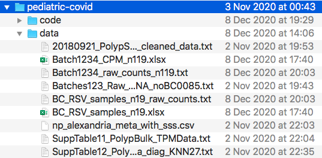
Record everything for future archaeologists
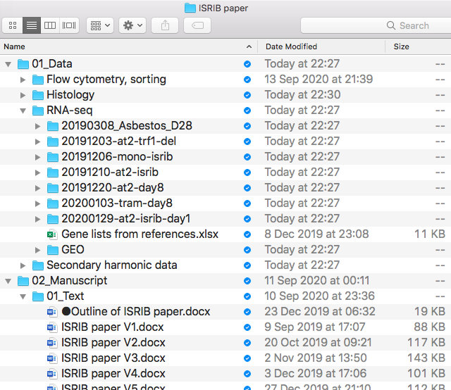
Record everything for future archaeologists
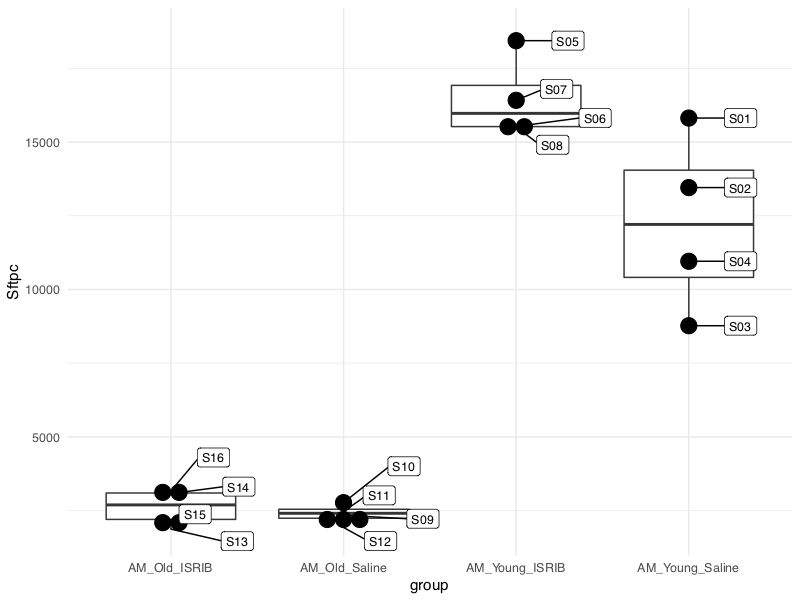
Record everything for future archaeologists
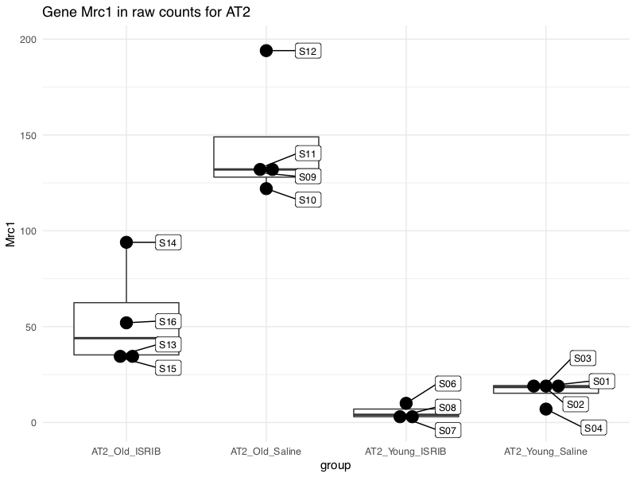
Record everything for future archaeologists
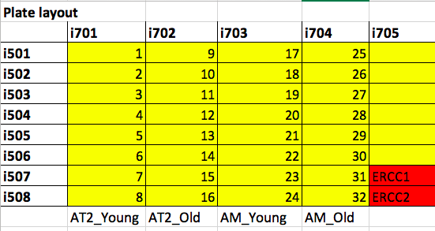
Record everything for future archaeologists
Do not modify original data
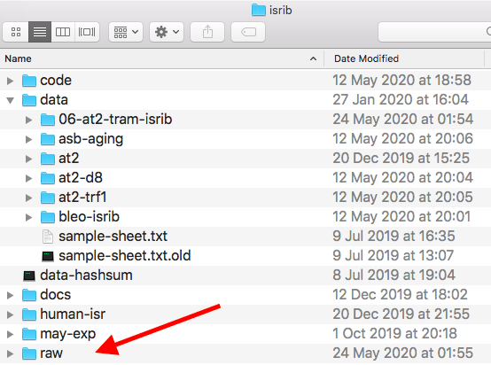
Back it all up: FSM res files
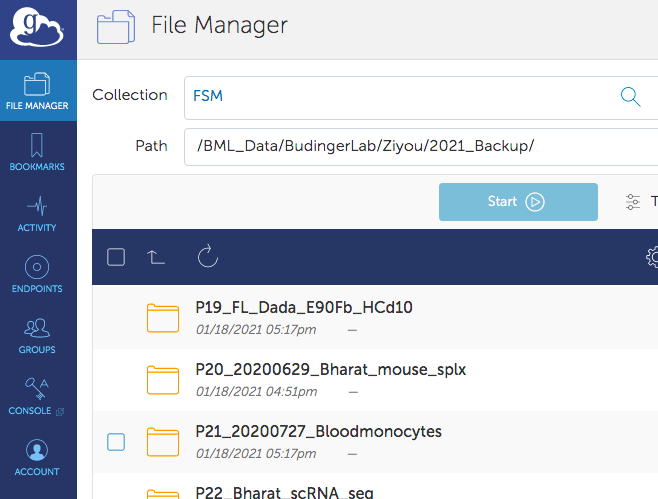
Avoid manual data manipulation
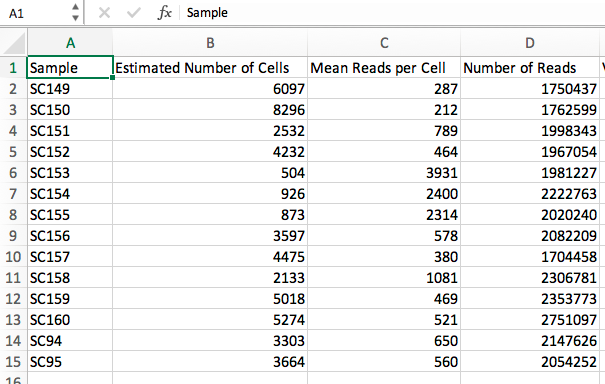
Avoid manual data manipulation
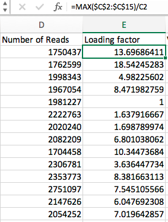
Avoid manual data manipulation
rule loading_factors:
input: "{dir}/metrics_summary.csv"
output: "{dir}/loading_factors.csv"
params:
slurm__skip=True
run:
data = pd.read_csv(input[0])
data = data.iloc[:, :4]
mean_reads = data.loc[:, "Mean Reads per Cell"]
data["Loading factor"] = mean_reads.max() / mean_reads
data.to_csv(output[0], index=False)
Tips on how to approach reproducibility
Pt 1: general
- Have a folder for each project
- Record everything in organized way where you would be able to find it
- Do not modify original data
- Back it all up
- Avoid manual data manipulation
Tips on how to approach reproducibility
Pt 2: code
Why can running the same code produce different results?
- Data changed
- Code changed
- Algorithms that rely on randomness
Tips on how to approach reproducibility
Pt 2: code
- Record environment
- Containers
- Version control code
- github
- Jupyter/R notebooks
Tips on how to approach reproducibility
Pt 2: code
Examples